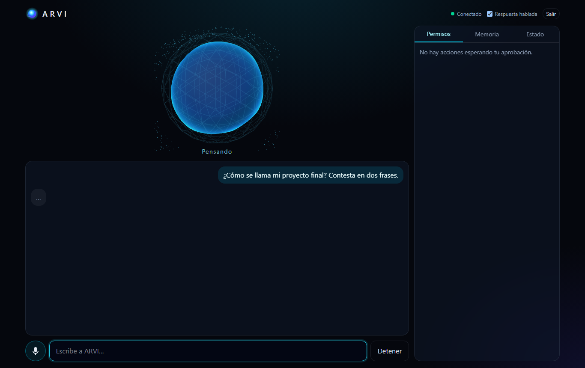
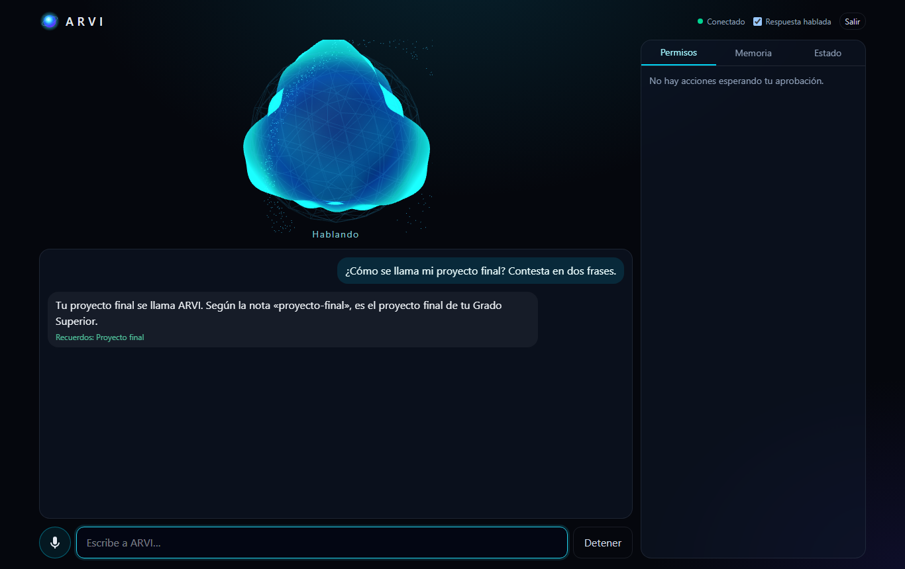
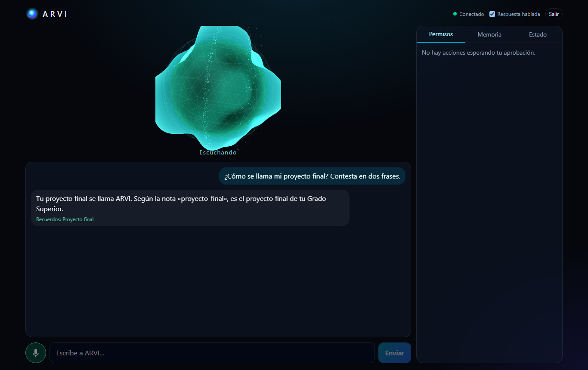
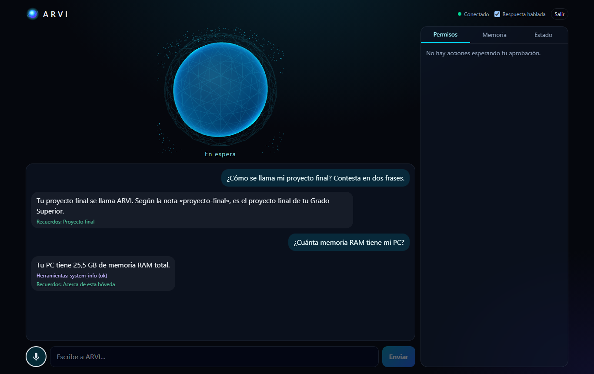
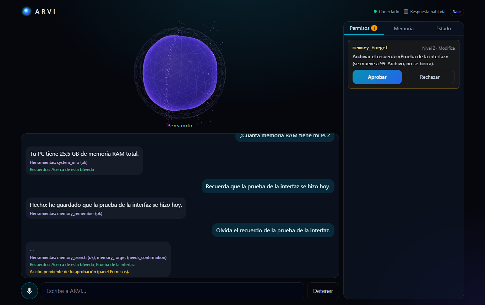
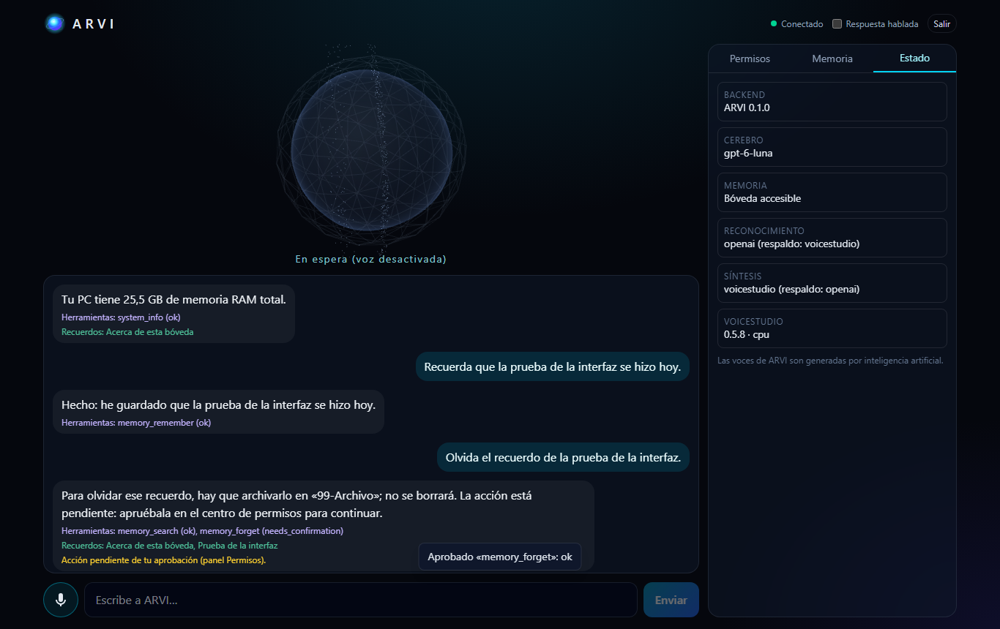
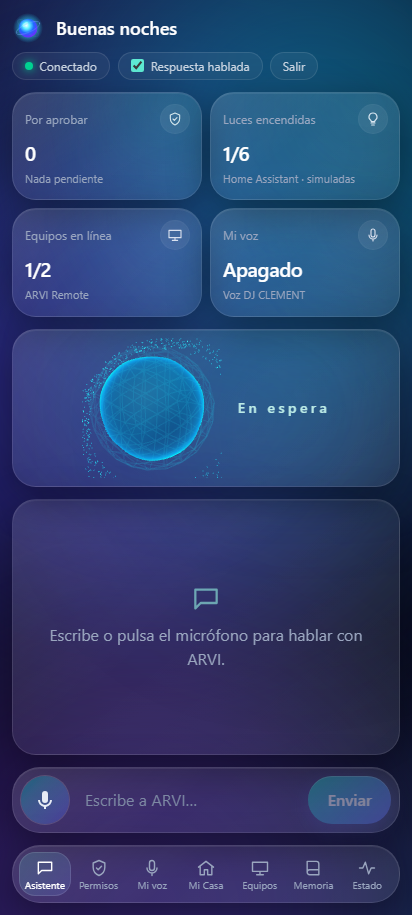

#14.1 Requisitos de diseño (del enunciado)
- La esfera energética flotante es el elemento principal, no un chat tradicional.
- Estética futurista y minimalista: transparencias, glassmorphism, azul eléctrico, cian y violeta.
- Estados: idle, listening, processing, speaking, executing, success, error y muted, sincronizados con niveles de audio reales.
- Alternativa CSS si WebGL no está disponible.
- Accesibilidad: teclado, contraste, movimiento reducido y estados no dependientes del color.
#14.2 Tecnologías
| Pieza | Versión | Uso |
|---|---|---|
| React | 19.3 | Componentes y estado de la interfaz |
| TypeScript | 7.0 (compilador nativo) | Tipado estricto (strict, sin variables sin usar) |
| Vite | 8.3 | Servidor de desarrollo con proxy a la API y compilación |
| Tailwind CSS | 4.3 | Estilos (plugin @tailwindcss/vite) |
| Three.js | 0.187 | Esfera 3D con shaders propios |
| Vitest + jsdom | 5.1 / 31 | Pruebas unitarias del frontend |
La instalación (npm install) descargó 69 MB en 19 s. Se vigiló el túnel del otro servicio web del
usuario durante la descarga (INC-011): 0 errores.
#14.3 Estructura
%% figura: Componentes de la interfaz y su relación con la API de ARVI
flowchart TB
subgraph Navegador
APP[App.tsx<br/>estado y flujo] --> ORB[Orb.tsx<br/>Three.js]
APP --> NAV[Navegación lateral / barra inferior<br/>Icons.tsx · Kpis.tsx]
NAV --> SIDE[SidePanel.tsx<br/>permisos · mi voz · mi casa · ordenadores · memoria · estado]
APP --> SOCK[chatSocket.ts]
APP --> SPL[sentences.ts<br/>frase a frase]
SPL --> Q[speechQueue.ts<br/>cola con interrupción]
Q --> PLY[audio.ts · Player<br/>nivel de salida]
APP --> REC[audio.ts · Recorder<br/>micrófono + silencio]
end
SOCK <-->|WebSocket /ws/chat| API[(Backend ARVI)]
Q -->|POST /api/voice/speak| API
REC -->|POST /api/voice/transcribe| API
SIDE -->|/api/actions · /api/memories · /api/voice/status| API
PLY -.nivel.-> ORB
REC -.nivel.-> ORBEn desarrollo, Vite (127.0.0.1:5173) reenvía /api y /ws al backend. En uso normal, el backend
sirve la interfaz compilada (frontend/dist) en http://127.0.0.1:8765/. Así comparten origen y no
hace falta abrir CORS.
#14.4 La esfera
Orb.tsx dibuja un icosaedro muy subdividido con un shader propio:
- Vértices: se desplazan siguiendo dos capas de ondas. La amplitud es la suma de una base, un pulso (al pensar o ejecutar) y el nivel de audio real.
- Fragmentos: mezclan dos colores según el desplazamiento y añaden un brillo de borde (efecto Fresnel) que crece con el volumen.
- Decoración: una malla de alambre que gira y un anillo de 700 partículas.
El nivel de audio se lee en cada fotograma mediante una función, sin re-renderizar React:
- Al escuchar, sale del
AnalyserNodedel micrófono. - Al hablar, sale del
AnalyserNodeconectado a la reproducción.
| Estado | Cuándo | Colores |
|---|---|---|
| En espera (idle) | Sin actividad | Cian |
| Escuchando (listening) | Grabando el micrófono | Verde azulado + amplitud del micrófono |
| Pensando (processing) | Esperando al modelo o transcribiendo | Violeta con pulso |
| Ejecutando (executing) | El agente usa una herramienta (state: executing) |
Ámbar con pulso |
| Hablando (speaking) | Suena la voz de ARVI | Azul eléctrico + amplitud de la voz |
| Hecho (success) | 1,2 s tras una respuesta sin error | Verde |
| Error | 2,5 s tras un error | Rojo-naranja |
| Silenciado (muted) | «Respuesta hablada» desactivada | Gris, movimiento lento |
Accesibilidad:
- El estado siempre aparece escrito bajo la esfera, en una región
aria-live; no depende solo del color. - La esfera es un botón accesible («Pulsa para interrumpir»).
Escinterrumpe a ARVI.- Con
prefers-reduced-motionla animación se ralentiza mucho. - Si no hay WebGL, queda un halo CSS que también cambia de color según el estado.
#14.5 Voz frase a frase e interrupción
Esperar la respuesta completa y sintetizarla de una vez hacía que el usuario esperara más de 11 s hasta oír algo (capítulo 10). Por eso:
SentenceSplittercorta el texto que llega por el WebSocket en frases completas. No corta en decimales («25.5») ni en abreviaturas («p. ej.»), y une las frases demasiado cortas.SpeechQueuepide cada frase a/api/voice/speaky la reproduce en orden. Mientras suena una, ya prepara la siguiente.stop()corta el audio al instante, cancela las peticiones en curso y vacía la cola. Se activa conEsc, al pulsar la esfera, con el botón Detener o al empezar a hablar (barge-in). Además, se cancela la respuesta del modelo en el backend ({"type":"cancel"}).
VoiceStudio rechaza con 429 dos síntesis simultáneas (INC-015). Por eso el backend pone las
peticiones en cola y la preparación anticipada no provoca errores.
#14.6 Micrófono
Recorder usa getUserMedia con cancelación de eco, supresión de ruido y control de ganancia, y
graba con MediaRecorder (WebM/Opus). La grabación se corta sola tras 1,4 s de silencio, una vez
detectada voz (máximo 30 s). Si no se oyó voz, no se envía nada.
#14.7 Panel de secciones
| Sección | Contenido |
|---|---|
| Mi voz | Consentimiento, estado del aprendizaje, métricas medidas, perfiles y escucha A/B (capítulo 26) |
| Mi Casa | Dispositivos de Home Assistant con su permiso, escenas e historial (capítulo 24) |
| Ordenadores | Equipos registrados, estado del agente, acciones permitidas y revocación (capítulo 25) |
| Permisos | Acciones pendientes con herramienta, nivel y vista previa; botones Aprobar / Rechazar |
| Memoria | Buscador sobre la memoria de Obsidian (búsqueda FTS5 del backend) |
| Estado | Backend, modelo, bóveda, motores de voz con su respaldo, estado de VoiceStudio y aviso de voz IA |
#14.8 Seguridad
- Acceso: el token de la API se pide al entrar, se comprueba contra el backend y se guarda solo en ese navegador. En el WebSocket viaja en el primer mensaje, nunca en la URL.
- CSP: solo se permiten recursos propios (
default-src 'self'). - Contenido: los mensajes se muestran como texto, sin
innerHTML, así que no hay inyección HTML. - Red: Vite escucha solo en
127.0.0.1.
#14.9 Pruebas
- Unitarias (Vitest, 10 casos):
- Troceado de frases: streaming, decimales, abreviaturas, frases cortas, listas.
- Cola de voz: orden, preparación anticipada, interrupción, reanudación, error en una frase.
- Extremo a extremo REAL (
scripts/e2e/interfaz_voz.py, Playwright + Chromium): - Chromium usa un WAV como micrófono simulado (
--use-file-for-fake-audio-capture). - Recorrido probado: acceso, pregunta escrita con voz, pregunta por micrófono con corte
automático, interrupción con
Esc, aprobación de una acción y vista móvil. - La prueba comprueba antes que VoiceStudio esté abierto y registra qué motor generó cada respuesta, para que el respaldo no pueda ocultar un fallo (INC-014).
Resultados de la ejecución final (P-019, configuración elegida por el alumno: voz por defecto de VoiceStudio en calidad 4 y reconocimiento con OpenAI):
| Medida | Valor |
|---|---|
| Pregunta escrita → primera frase hablada | 7,6 s |
| Pregunta por micrófono → texto transcrito (incluye ~3 s hablando y 1,4 s de silencio) | 4,9 s |
| Pregunta por micrófono → primera frase hablada | 15,9 s |
| Transcripción | «¿Cuánta memoria RAM tiene mi PC?» (exacta) |
| Motores usados | stt:openai ×1, tts:voicestudio ×3; 0 respaldos |
| Errores en la consola del navegador | 0 |
#14.10 Capturas








#14.11 Accesibilidad (RNF-06)
La interfaz se auditó el 2026-11-12 (P-040, scripts/e2e/accesibilidad.py) con axe-core 4.14.0,
el motor de auditoría de accesibilidad más usado. Se aplicaron las reglas WCAG 2.0, 2.1 y 2.2 de
nivel A y AA sobre la interfaz real servida por el backend:
| Comprobación | Resultado |
|---|---|
| axe-core en la pantalla de acceso | 0 infracciones |
| axe-core en la pantalla principal (esfera, mensajes, panel lateral) | 0 infracciones |
| Primer Tab desde la carga | Lleva al campo «Token de acceso» |
| Recorrido con Tab hasta escribir | Salir → esfera («Pulsa para interrumpir») → Hablar → Mensaje (4 pasos) |
| Enviar con Enter, solo teclado | La pregunta se envía y se recibe la respuesta |
prefers-reduced-motion: reduce |
Detectado. La esfera congela su animación y CSS desactiva las transiciones |
Lo hacen posible varias decisiones de diseño:
- etiquetas
aria-labelen los botones solo con icono; aria-liveen el estado de la esfera, para que un lector de pantalla anuncie «Pensando» o «Hablando»;role="tablist"en el panel;- anillo de foco visible;
Escpara interrumpir;- estados con texto, no solo con color.
Para inyectar axe-core, la prueba desactiva la CSP solo en su navegador, sin cambiar la cabecera real.
#14.12 Estado
| Elemento | Estado |
|---|---|
| Esfera, voz frase a frase, panel de permisos, memoria y estado | Hecho (P-019) |
| Accesibilidad | Hecho (P-040) |
| Aplicación de escritorio con Tauri 2 | Hecho (capítulo 15, P-034, P-035) |
| PWA instalable | Hecho (capítulo 15, P-029, P-030) |
| Acceso desde el móvil por HTTPS | PENDIENTE Activación de Tailscale Serve por el alumno |
| Prueba con el micrófono real del alumno | PENDIENTE La automatizada usa un micrófono simulado |
| Rediseño «cristal oscuro» (escritorio, PWA y Tauri) | Hecho (14.13, P-052) |
#14.13 Rediseño «cristal oscuro» (glassmorphism)
El 2026-11-12 el alumno pidió rehacer toda la interfaz con un estilo de panel de control de cristal esmerilado en modo oscuro. Tomó como referencia una imagen de la galería Liquid Glass Design («Glassmorphism Dashboard UI Design») y el repositorio de código abierto Glassy_DashBoard (licencia MIT). De la galería solo había una imagen y del repositorio solo la idea: no usa estilos propios, solo utilidades de Tailwind. Por eso se adoptó el estilo, sin copiar código.
| Elemento | Decisión |
|---|---|
| Fondo | Azul noche #060914 con cuatro manchas de color (índigo, cian, violeta, verde azulado) difuminadas 90 px y con un movimiento muy lento, que se desactiva con prefers-reduced-motion |
| Cristal | Paneles semitransparentes (rgb(255 255 255 / 5,5 %) + degradado de brillo), backdrop-filter: blur(22px) saturate(150%), borde blanco al 11 %, radio 24 px y sombra suave. Si el navegador no admite backdrop-filter, el panel pasa a ser opaco y legible |
| Escritorio y Tauri | Barra lateral de navegación, saludo con fecha, fila de indicadores (acciones por aprobar, luces encendidas, equipos en línea, estado de «Mi voz»), tarjeta de la esfera, conversación y panel de la sección elegida |
| Móvil (PWA) | Indicadores en cuadrícula de 2×2 y barra de navegación inferior; cada sección se abre a pantalla completa |
| Acento | Degradado verde azulado → índigo en botones principales, mensajes del usuario y elemento activo |
| Web de documentación | El mismo fondo y paneles de cristal en el tema oscuro de MkDocs (docs/web/stylesheets/arvi.css) |
Los indicadores muestran datos reales de la API (/api/actions, /api/casa, /api/equipos,
/api/voz/aprendizaje). Si un servicio no responde, muestran «—» y no un valor inventado. Las luces
indican si son simuladas.
Comprobaciones (P-052):
- compilación sin errores;
- Vitest 10/10;
- axe-core sin infracciones (WCAG A/AA) en el acceso y en la pantalla principal;
- sin desplazamiento horizontal a 412 px, 1100 px y 1440 px;
- capturas reales revisadas una a una (F-028 y F-029; las de los capítulos 24–26 se repitieron con el diseño nuevo).

